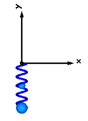

SpringLinear translational spring with optional mass |
Diagram
{kind=link}
Information
This information is part of the Modelica Standard Library maintained by the Modelica Association.
Linear spring acting as line force between frame_a and frame_b. A force f is exerted on the origin of frame_b and with opposite sign on the origin of frame_a along the line from the origin of frame_a to the origin of frame_b according to the equation:
f = c*(s - s_unstretched);
where "c" and "s_unstretched" are parameters and "s" is the distance between the origin of frame_a and the origin of frame_b.
Optionally, the mass of the spring is taken into account by a point mass located on the line between frame_a and frame_b (default: middle of the line). If the spring mass is zero, the additional equations to handle the mass are removed.
In the following figure a typical animation of the spring is shown. The blue sphere in the middle of the spring characterizes the location of the point mass.

Parameters (10)
| animation |
Value: true Type: Boolean Description: = true, if animation shall be enabled |
|---|---|
| showMass |
Value: true Type: Boolean Description: = true, if point mass shall be visualized as sphere if animation=true and m>0 |
| c |
Value: Type: TranslationalSpringConstant (N/m) Description: Spring constant |
| s_unstretched |
Value: 0 Type: Length (m) Description: Unstretched spring length |
| m |
Value: 0 Type: Mass (kg) Description: Spring mass located on the connection line between the origin of frame_a and the origin of frame_b |
| lengthFraction |
Value: 0.5 Type: Real Description: Location of spring mass with respect to frame_a as a fraction of the distance from frame_a to frame_b (=0: at frame_a; =1: at frame_b) |
| numberOfWindings |
Value: 5 Type: Integer Description: Number of spring windings |
| s_small |
Value: 1e-10 Type: Distance (m) Description: Prevent zero-division if distance between frame_a and frame_b is zero |
| fixedRotationAtFrame_a |
Value: false Type: Boolean Description: =true, if rotation frame_a.R is fixed (to directly connect line forces) |
| fixedRotationAtFrame_b |
Value: false Type: Boolean Description: =true, if rotation frame_b.R is fixed (to directly connect line forces) |
Inputs (6)
| width |
Default Value: world.defaultForceWidth Type: Distance (m) Description: Width of spring |
|---|---|
| coilWidth |
Default Value: width / 10 Type: Distance (m) Description: Width of spring coil |
| color |
Default Value: Modelica.Mechanics.MultiBody.Types.Defaults.SpringColor Type: Color Description: Color of spring |
| specularCoefficient |
Default Value: world.defaultSpecularCoefficient Type: SpecularCoefficient Description: Reflection of ambient light (= 0: light is completely absorbed) |
| massDiameter |
Default Value: max(0, (width - 2 * coilWidth) * 0.9) Type: Diameter (m) Description: Diameter of mass point sphere |
| massColor |
Default Value: Modelica.Mechanics.MultiBody.Types.Defaults.BodyColor Type: Color Description: Color of mass point |
Connectors (2)
Components (3)
| world |
Type: World |
|
|---|---|---|
| lineForce |
Type: LineForceWithMass |
|
| spring |
Type: Spring |
Used in Examples (13)
|
Modelica.Mechanics.MultiBody.Examples.Elementary
Free flying body attached by two springs to environment |
|
|
Modelica.Mechanics.MultiBody.Examples.Elementary
Determine spring constant such that system is in steady state at given position |
|
|
Modelica.Mechanics.MultiBody.Examples.Elementary
Simple spring/damper/mass system |
|
|
Modelica.Mechanics.MultiBody.Examples.Elementary
Two point masses in a point gravity field (rotation of bodies is neglected) |
|
|
Modelica.Mechanics.MultiBody.Examples.Elementary
Simple spring/damper/mass system |
|
|
Modelica.Mechanics.MultiBody.Examples.Elementary
Mass attached with a spring to the world frame |
|
|
Modelica.Mechanics.MultiBody.Examples.Elementary
Point mass hanging on a spring |
|
|
Modelica.Mechanics.MultiBody.Examples.Elementary
3-dim. springs in series and parallel connection |
|
|
Modelica.Mechanics.MultiBody.Examples.Elementary
Demonstrate the modeling of heat losses |
|
|
Modelica.Mechanics.MultiBody.Examples.Constraints
Body attached by one spring and two prismatic joints or constrained to environment |
|
|
Modelica.Mechanics.MultiBody.Examples.Constraints
Body attached by one spring and revolute joint or constrained to environment |
|
|
Modelica.Mechanics.MultiBody.Examples.Constraints
Body attached by one spring and spherical joint or constrained to environment |
|
|
Modelica.Mechanics.MultiBody.Examples.Constraints
Body attached by one spring and universal joint or constrained to environment |